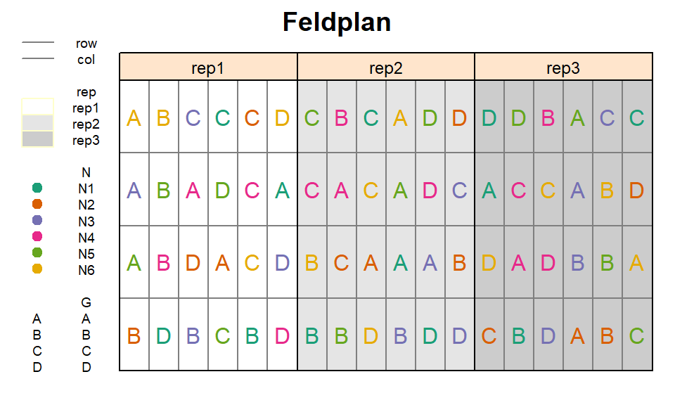
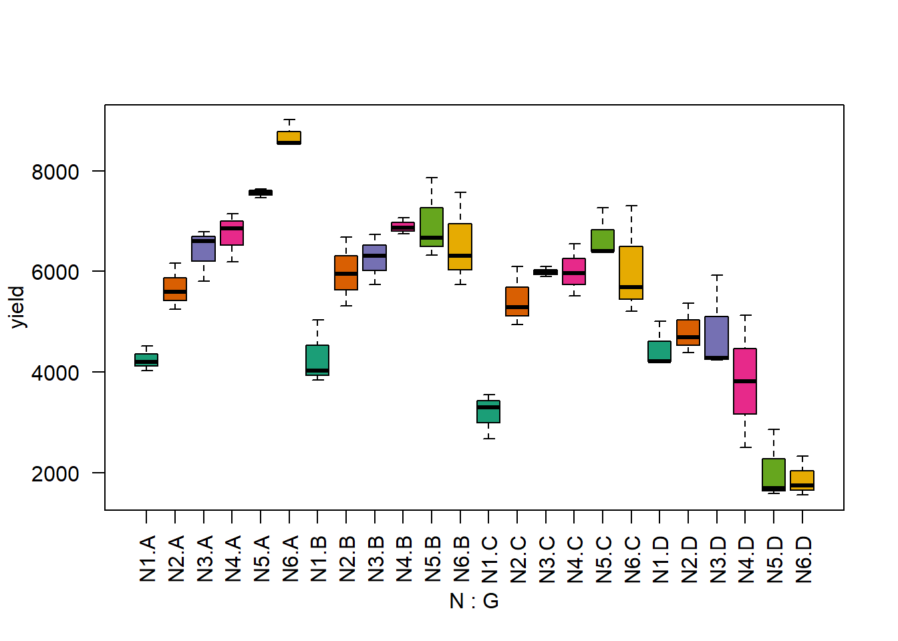
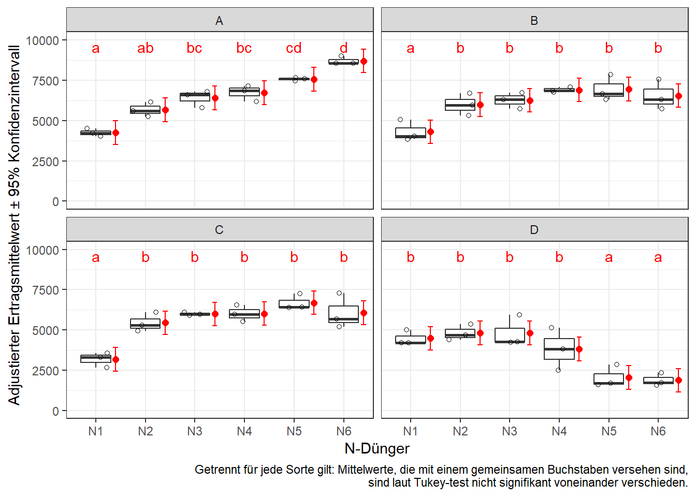

2 Beh.faktoren - RCBD
Datensatz
library(data.table) # bessere Datenmanipulation
library(ggplot2) # bessere Plots
library(emmeans) # adjustierte Mittelwerte
library(lme4); library(lmerTest) # gemischtes Modell
library(RColorBrewer) # bessere FarbenIn diesem Experiment wurden die Auswirkungen von 6 Stickstoffdüngern (N) auf den Ertrag von 4 Reissorten (G) untersucht. Demnach gab es zwei Behandlungsfaktoren mit insgesamt 6x4=24 Behandlungsstufenkombinationen. Diese 24 Kombinationen wurden 3 mal in vollständigen Blöcken wiederholt - wir haben also ein RCBD. Hier mehr Infos zu Versuchsdesigns

print(riceRCBD, nrows=10)## N G rep yield
## 1: N1 A rep1 4520
## 2: N2 A rep1 5598
## 3: N4 A rep1 6192
## 4: N6 A rep1 8542
## 5: N3 A rep1 5806
## ---
## 68: N6 D rep3 1744
## 69: N3 D rep3 4236
## 70: N1 D rep3 5016
## 71: N2 D rep3 4382
## 72: N5 D rep3 2856str(riceRCBD)## Classes 'data.table' and 'data.frame': 72 obs. of 4 variables:
## $ N : Factor w/ 6 levels "N1","N2"..
## $ G : Factor w/ 4 levels "A","B","..
## $ rep : Factor w/ 3 levels "rep1",""..
## $ yield: int 4520 5598 6192 8542 580..
## - attr(*, ".internal.selfref")=<exter..Deskriptive Statistik
Erst wollen wir ein Gefühl für den Datensatz bekommen und betrachten einen Boxplot für die Stufenkombinationen der zwei Behandlungsfaktoren. Mittels des col= statements der boxplot() Funktion können wir angeben welche Füllfarben die Boxen haben sollen. Wir wählen dieselben Farben wie im Feldplan - mehr Infos dazu hier.
boxplot(yield ~ N*G, col=brewer.pal(6, "Dark2"), data=riceRCBD, las=2) # las=2 dreht die Achsenbeschriftung
Es fällt auf, dass sich das Muster der Werte der verschiedenen N-Stufen für Sorte D deutlich von denen der anderen 3 Sorten unterscheiden. Dies deutet auf Wechselwirkungen zwischen den beiden Behandlungsfaktoren hin ( mehr Infos dazu hier).
Schließende Statistik
Lineares Modell
Wir können uns nun entschließen die Daten mittels eines linearen Modells zu analysieren. Das Modell ist dem aus dem vorangegangen Beispiel mit RCBD ähnlich, muss jedoch aufgrund des zweiten Behandlungsfaktors erweitert werden. Wir beginnen mit dem vollen Modell um die backward elimination anzuwenden ( mehr Infos dazu hier).
mod <- lm(yield ~ N + G + N:G + rep, data=riceRCBD)Zunächst sollten nun die Residuenplots (z.b. mit autoplot(mod)) evaluiert werden, was hier aber übersprungen wird. Erst dann ist eine Varianzanalyse zulässig.
Varianzanalyse
library(car)
Anova(mod, test.statistic="F", type="III")## Anova Table (Type III tests)
##
## Response: yield
## Sum Sq Df F value Pr(>F)
## (Intercept) 47548894 1 120.6463 1.893e-14 ***
## N 35269882 5 17.8981 8.064e-10 ***
## G 3162391 3 2.6747 0.05821 .
## rep 1084820 2 1.3763 0.26272
## N:G 69378044 15 11.7356 4.472e-11 ***
## Residuals 18129432 46
## ---
## Signif. codes: 0 '***' 0.001 '**' 0.01 '*' 0.05 '.' 0.1 ' ' 1Da dies Ergebnisse einer mehrfaktorielle Varianzanalyse sind, betrachten zualleerst den F-Test für die Wechselwirkung. Der signifikante p-Wert von G:N deutet darauf hin, dass die beiden Behandlungsfaktoren nicht rein additiv wirken, sondern wechselwirken. Dies bestätigt die Vermutung aus dem Boxplot der Rohdaten oben. Das bedeutet außerdem, dass wir die adjustierten Mittelwerte der Wechselwirkungseffekte berechnen wollen und nicht die der beiden Haupteffekte.
Wäre der Wechselwirkungseffekt hier nicht signifikant gewesen, würden wir ihn im Rahmen der Backwards Elimination aus dem Modell nehmen und erneut eine ANOVA für das reduzierte Modell durchführen. Mehr dazu hier.
Multipler Mittelwertvergleich
Mit emmeans() können wir auch adjustierte Mittelwerte für Wechselwirkungseffekte berechnen. Das geht entweder mit pairwise ~ N : G oder pairwise ~ N | G. Im beiden Fällen werden wie erwartet Mittelwerte für alle Kombinationen errechnet. Der Unterschied besteht in der Anzahl der Differenzen zwischen den Mittelwerten, die berechnet werden. Im ersten Fall werden wie gewohnt alle Mittelwerte miteinander verglichen. Im zweiten Fall, werden nur N-Stufen innerhalb einer Sorte miteinander verglichen. Natürlich können ‘N’ und ‘G’ hier auch ausgetauscht werden. Es kommt auf die Versuchsfrage an, welche Mittelwertvergleiche von größerem Interesse sind. Wir wollen uns hier auf die Vergleiche der N-Mittelwerte getrennt pro Sorte fokussieren.
means <- emmeans(mod, pairwise ~ N | G, adjust="tukey") # adjust="none" für t-test
means <- CLD(means$emmeans, Letters=letters)## Warning: 'CLD' will be deprecated. Its use is discouraged.
## See '? CLD' for an explanation. Use 'pwpp' or 'multcomp::cld' instead.means## G = A:
## N emmean SE df lower.CL upper.CL .group
## N1 4253 362 46 3523 4982 a
## N2 5672 362 46 4942 6402 ab
## N3 6400 362 46 5670 7130 bc
## N4 6733 362 46 6003 7462 bc
## N5 7563 362 46 6834 8293 cd
## N6 8701 362 46 7971 9430 d
##
## G = B:
## N emmean SE df lower.CL upper.CL .group
## N1 4306 362 46 3576 5036 a
## N2 5982 362 46 5252 6712 b
## N3 6259 362 46 5529 6989 b
## N6 6540 362 46 5811 7270 b
## N4 6895 362 46 6165 7625 b
## N5 6951 362 46 6221 7680 b
##
## G = C:
## N emmean SE df lower.CL upper.CL .group
## N1 3177 362 46 2448 3907 a
## N2 5443 362 46 4713 6172 b
## N3 5994 362 46 5264 6724 b
## N4 6014 362 46 5284 6744 b
## N6 6065 362 46 5336 6795 b
## N5 6687 362 46 5958 7417 b
##
## G = D:
## N emmean SE df lower.CL upper.CL .group
## N6 1881 362 46 1151 2610 a
## N5 2047 362 46 1317 2776 a
## N4 3816 362 46 3086 4546 b
## N1 4481 362 46 3752 5211 b
## N3 4812 362 46 4082 5542 b
## N2 4816 362 46 4086 5546 b
##
## Results are averaged over the levels of: rep
## Confidence level used: 0.95
## P value adjustment: tukey method for comparing a family of 6 estimates
## significance level used: alpha = 0.05Ergebnisaufbereitung
Erneut wollen wir die Ergebnisse abschließend in einem Balkendiagramm darstellen. Weil wir unser aber die N-Vergleiche isoliert pro Sorte konzentrieren wollen, können wir uns entscheiden ein Balkendiagramm pro Sorte zu erstellen. In solch einer Situation kann in der ggplot() Funktion das facet_wrap() statement genutzt werden.
Außerdem wollen wir die Balken wieder mit denselben Farben versehen, die die N-Stufen bereits im Feldplan und dem Boxplot hatten. Dazu fügen wir zuerst dem geom_bar() statement fill=N hinzu. Nun bekommt jede N-Stufe eine andere Farbe. Um nicht die default Farben zu nehmen, sondern selbst zu bestimmen welche Farben es sein sollen, schreiben wir zusätzlich noch scale_fill_manual(values=...) in die Funktion. Um die dann automatisch generierte Legende zu unterdrücken (weil sie in diesem Fall keine zusätzlichen Informationen bringt), fügen wir außerdem guides(fill=FALSE) hinzu.
means.plot <- as.data.table(means) # korrektes Format für ggplot
means.plot$.group <- gsub(" ", "", means.plot$.group, fixed = TRUE) # Entferne Leerzeichen
print(means.plot, nrows=2)## N G emmean SE df lower.CL upper.CL .group
## 1: N1 A 4252.667 362.4537 46 3523.085 4982.248 a
## 2: N2 A 5672.000 362.4537 46 4942.419 6401.581 ab
## 3: N3 A 6400.000 362.4537 46 5670.419 7129.581 bc
## 4: N4 A 6732.667 362.4537 46 6003.085 7462.248 bc
## 5: N5 A 7563.333 362.4537 46 6833.752 8292.915 cd
## ---
## 20: N5 D 2046.667 362.4537 46 1317.085 2776.248 a
## 21: N4 D 3816.000 362.4537 46 3086.419 4545.581 b
## 22: N1 D 4481.333 362.4537 46 3751.752 5210.915 b
## 23: N3 D 4812.000 362.4537 46 4082.419 5541.581 b
## 24: N2 D 4816.000 362.4537 46 4086.419 5545.581 bggplot(data=means.plot, aes(x=N)) +
geom_bar(aes(y=emmean, fill=N), stat="identity", width=0.8) +
scale_fill_manual(values=brewer.pal(6, "Dark2")) + guides(fill=FALSE) +
geom_errorbar(aes(ymin=lower.CL, ymax=upper.CL), width=0.4) +
geom_text(aes(y=emmean+1500, label=.group)) +
facet_wrap(~G) + # ein plot pro Sorte
theme_bw() +
labs(main="Adj. N-Mittelwerte pro Sorte",
y="Adjustierter Ertragsmittelwert ± 95% Konfidenzintervall", x="N-Dünger",
caption="Getrennt für jede Sorte gilt: Mittelwerte, die mit einem gemeinsamen Buchstaben versehen sind,\n sind laut Tukey-test nicht signifikant voneinander verschieden.")
oder alternativ
ggplot() + theme_bw() +
# Rohdaten (crd)
geom_boxplot(data=riceRCBD, aes(x=N, y=yield), outlier.shape=NA, width=0.6) +
geom_jitter(data=riceRCBD, aes(x=N, y=yield), width=0.25, height=0, shape=1) +
# Ergebnisse (means)
geom_point(data=means.plot, aes(x=as.numeric(N)+0.4, y=emmean), col="red", shape=16, size=2) +
geom_errorbar(data=means.plot, aes(x=as.numeric(N)+0.4, ymin=lower.CL, ymax=upper.CL), col="red", width=0.1) +
geom_text(data=means.plot, aes(x=N, y=9600, label=.group), col="red") +
facet_wrap(~G) + # ein plot pro Sorte
ylim(0, 10000) +
labs(main="Adj. N-Mittelwerte pro Sorte",
y="Adjustierter Ertragsmittelwert ± 95% Konfidenzintervall", x="N-Dünger",
caption="Getrennt für jede Sorte gilt: Mittelwerte, die mit einem gemeinsamen Buchstaben versehen sind,\n sind laut Tukey-test nicht signifikant voneinander verschieden.")